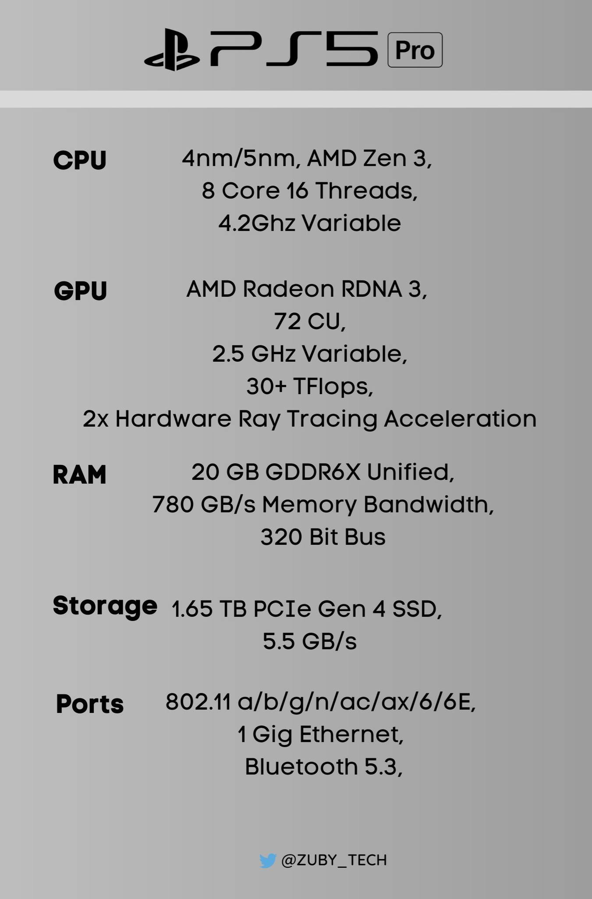

Sau những tin đồn về bộ công cụ dành cho nhà phát triển PS5 Pro năm ngoái, một báo cáo mới đã tuyên bố rằng bản nâng cấp thế hệ giữa của Sony đã được đưa vào sản xuất. Tom Henderson, người trong cuộc nổi tiếng đã nghe từ các nguồn của mình rằng Sony sẽ bắt đầu loại bỏ dần mẫu PS5 nguyên bản vào cuối năm nay.
Khi nào PS5 Pro sẽ phát hành?
Viết cho ấn phẩm Insider Gaming, Henderson uyên bố rằng PS5 Pro đang nhắm mục tiêu đến thời điểm phát hành vào cuối năm 2024. Tuy nhiên, trước khi bản nâng cấp ra mắt, Sony sẽ bắt đầu loại bỏ dần phần cứng PS5 hiện tại và thay thế nó bằng mẫu PS5 được đồn đại có ổ đĩa có thể tháo rời, có lẽ sẽ mỏng hơn. Mẫu đó dự kiến sẽ được tung ra vào cuối năm 2023.
Tin đồn về cả PS5 với ổ đĩa có thể tháo rời và console PRO đã bắt đầu lan truyền vào năm ngoái. Sony chưa xác nhận sự tồn tại của các mẫu console mới nhưng cuối cùng đã công bố bộ điều khiển Pro hay còn gọi là DualSense Edge. Điều đó nói rằng, công ty được cho là có một buổi giới thiệu lớn sẽ diễn ra vào khoảng Playstation Showcase vào hè này về PS5 với ổ đĩa có thể tháo rời sau đó.
Cấu hình rò rỉ của PS5 Pro:
